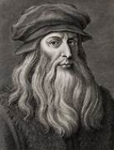

Nicolau Copérnico (1473 - 1543)

Galileu Galilei (1564 - 1642)

Andreas Vesalius (1514 - 1564)

Leonardo da Vinci (1452 - 1519)

Tycho Brahe (1546 - 1601)

Miguel Servet (1511 - 1553)

Johannes Kepler (1571 - 1630)

William Harvey (1578-1657)

Robert Hooke (1635-1703)

Francis Bacon (1561 - 1626)